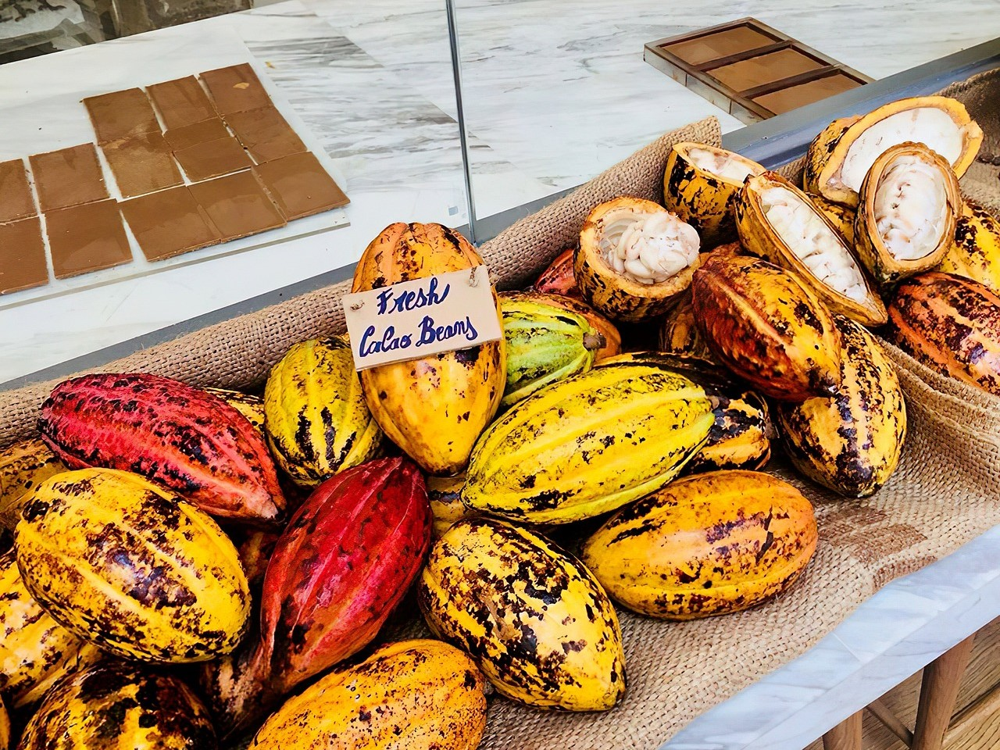
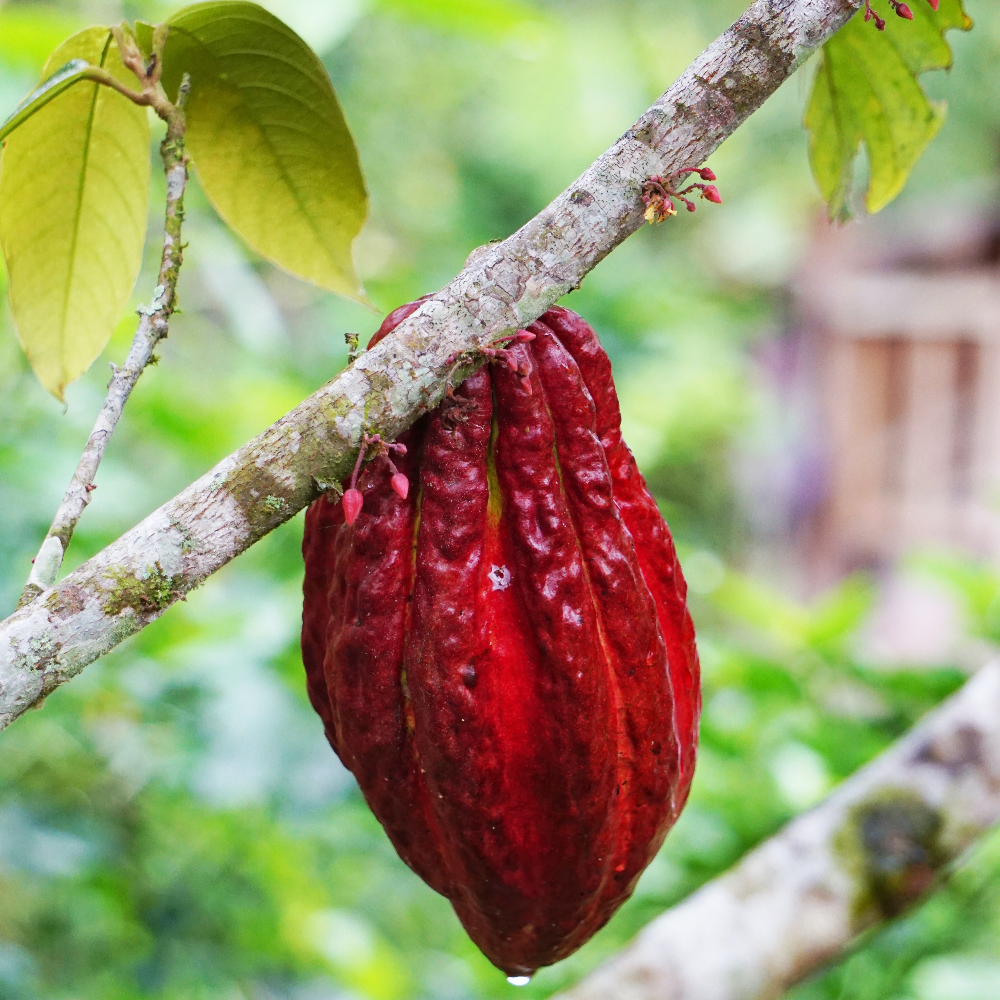
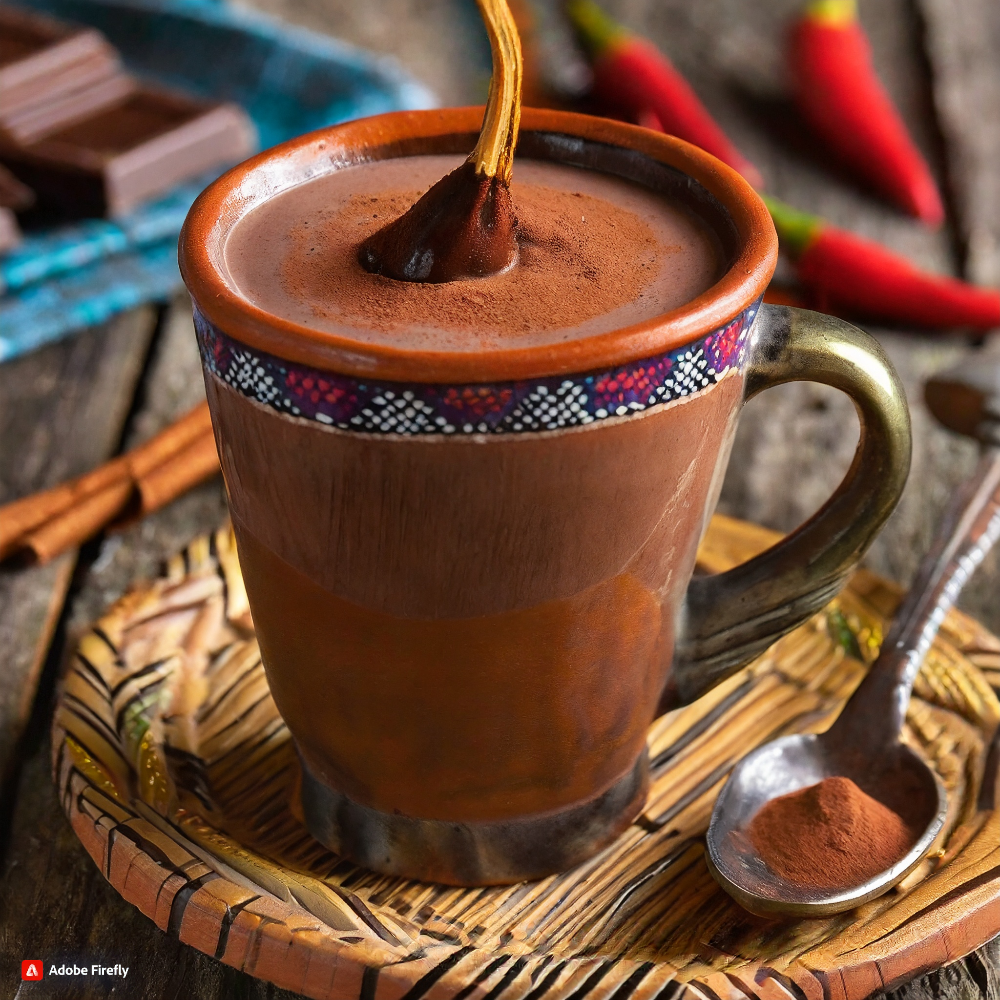
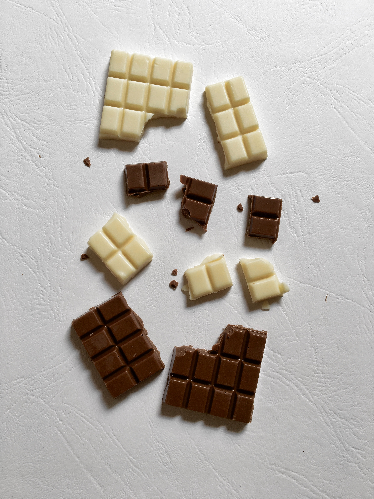

可可冷知識
"Why does Cocoa like to attend parties but doesn't like to bring friends along?
Because he's afraid everyone will 'melt' in social situations!"
Click to find out!


可可尚未傳入歐洲前，與甜滋滋的午後點心根本沾不上邊。起初，馬雅人將可可作為祭典飲品──一杯苦澀的可可原汁，佐以數種辛香料，在儀式中傳遞飲用。該飲品在當時稱為「朱古力」，有「苦水」之意。

可可對環境的要求嚴苛，喜高溫，卻怕曬又吹不得風；個子高的檳榔樹提供了可可樹生長過程中必要的遮蔽與擋風，亦減少日曝蒸散過度而缺水的風險。因此在台灣，有機會在可可園中看見檳榔樹哦！

研究證實，可可內含有的化學物質確實能使人產生戀愛的感覺。
| 可可鹼、咖啡因：有興奮作用，使人亢奮不已
| 內生性大麻素：令人感到愉悅，如同漫步在雲端
| 苯乙胺：加速心跳脈搏，猶如陷入熱戀
所以想促進兩人間的感情，送片巧克力確實是不錯的選擇喔～
| 可可鹼、咖啡因：有興奮作用，使人亢奮不已
| 內生性大麻素：令人感到愉悅，如同漫步在雲端
| 苯乙胺：加速心跳脈搏，猶如陷入熱戀
所以想促進兩人間的感情，送片巧克力確實是不錯的選擇喔～

氣溫升高時，巧克力所含的可可脂會融解出來，冷卻時再凝固，使巧克力表面形成粉狀物，稱為 blooming 現象。粉狀物普遍會減損巧克力的風味，但尚無食安疑慮。

從可可液塊中，榨取出乳黃色硬性的天然植物油脂，稱為可可脂，白巧克力即為可可脂與乳粉的混合物。它並沒有黑巧克力中可可粉的成分，所以許多國家不願承認白巧克力屬於巧克力的一種。